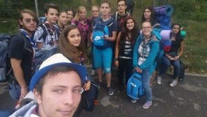

Poveștile toamnei: Iași Cercetează 3

Hello! Așa cum “într-o zi cu voie bună, moldovenii s-au născut”, așa și noi am plecat cu voie bună spre Iași pentru a participa la cea de-a treia ediție ISC. În prima zi am fost primiți de către gazdele noastre, având oportunitatea să vizităm, într-o perioadă de câteva ore, o mică parte din oraș, alegând să mergem în mall. După ce au sosit toți participanții și și-au instalat sacii de dormit, a avut loc festivitatea de deschidere. Am făcut cunostință unii cu alții cu ajutorul strigătelor pline de entuziasm. După care, folosindu-ne de un portal (film) proiectat pe un cearșaf, am intrat în lumea lui Mario.
Let’s play! Când soarele răsare trebuie să se dea și trezirea, și ce mod mai bun de a te trezii decât o melodie de la Drowing Pool, Bodies, urmată de un întreg playlist de melodii rock. După ce ne-am acomodat cu pixelii și rezoluția de afară ne-am decis că avem nevoie de un nivel mai mare pentru a bate bossul final. Așa că ne-am format patrulele și am pornit în căutarea celor nouă checkpoint-uri. Am pornit de lângă Mănăstirea Frumoasa spre Mănăstirea Cetățuia. Încă de la primul checkpoint unele patrule le-au depășit pe celelalte prin diferite metode; o hartă cu cărări sau o personă care știa zona. Am avut ocazia să mergem în mai multe locuri din Iași unde ne așteptau diferite probe pe care trebuia să le îndeplinim. Toate acestea pentru a trece la nivelul următor, pe parcurs fiind nevoiți să descoperim bug-urile din joc (toteme). După o zi întreagă de acumulat puncte de experiență ne-am hotărât că e bine să încheiem ziua așa cum am început-o, așa că ne-am așezat lângă o chitară și am început să cântăm.
Final Battle! În cea de-a treia zi am aflat cu cine vom fi în echipa de scoutball și atelierele la care vom participa. O mare parte din zi a fost ocupată de scoutball. Fiecare s-a străduit să joace cât mai bine, încercând totodată să rămână cu toate membrele întregi, reușind mai mult sau mai puțin. După scoutball au urmat atelierele unde puteai să îți ieși din “Toate Mințile Tale”, să încerci să scapi de slenderman într-un escape room, să devii un adevărat “Bomberman”, să joci noi board game-uri alături de Mario sau să înveți să dansezi de la “Mario în pași de horă” și multe alte ateliere. Aproape de încheiere a avut loc bătălia cu bossul final unde am jucat british bulldog. Jocul s-a încheiat cu o festivitate în care s-au anunțat patrulele câștigătoare și cu un alt film ce ne-a reamintit de cele trei zile petrecute în Iași. Cea de-a treia zi s-a încheiat cu o plimbare de seară pe străzile Iașiului, oprindu-ne în câte un local să ne relaxăm.
Game over! În ultima zi ne-am luat la revedere de la gazdele noastre din Centrul Local “Sf. Anton” Iași și ne-am mai plimbat prin oraș până sosea ora plecării, bucurându-ne de cele patru zile petrecute la ISC și de noile prietenii.
See you next year! Pentru mine ISC a fost una din cele mai plăcute experiențe alături de cercetași. Programul a fost bine gândit. M-a impresionat campionatul de scoutball și atelierele, în special ideea de a pune cercetașii din centre diferite să formeze o echipă. Mi-a plăcut că a fost un escape room, deși nu am participat personal la atelier și modul în care ne-am trezit dimineața. Mi-ar fi plăcut și mai mult dacă am fi putut să vizităm câteva din locurile unde au fost checkpoint-urile, de exemplu Teatrul Național Vasile Alecsandri. A fost însă o experiență unică și mi-ar plăcea dacă aș mai veni odată, găsindu-vă, prieteni, la fel de plini de entuziasm!
Mihai Necula